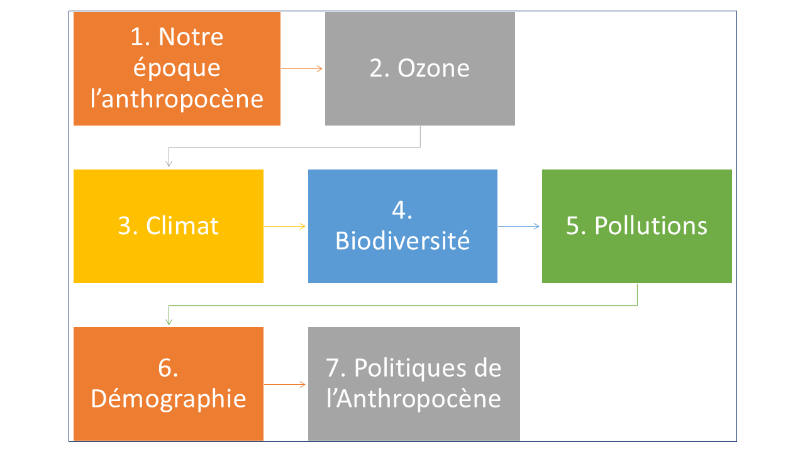
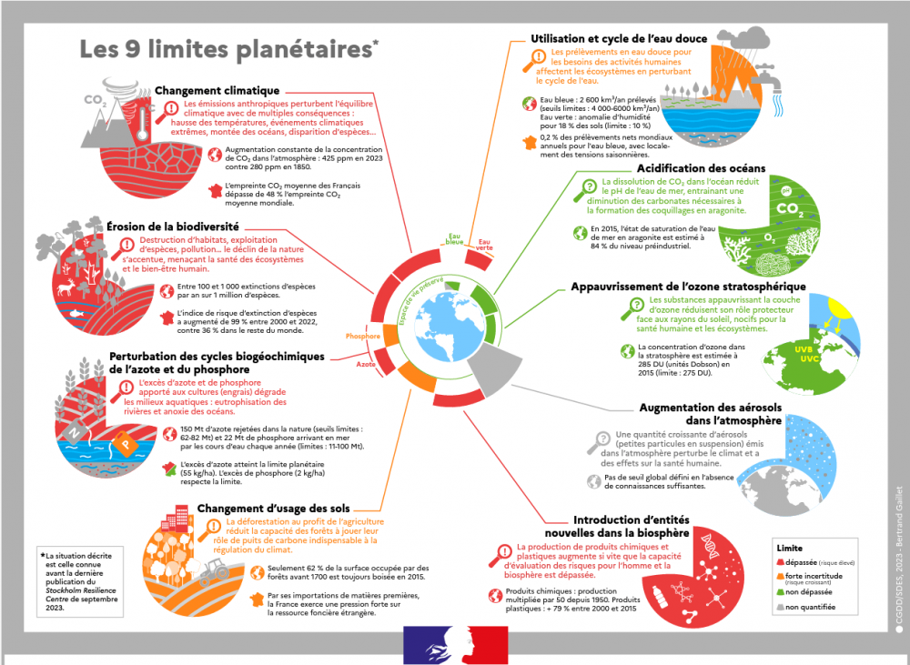
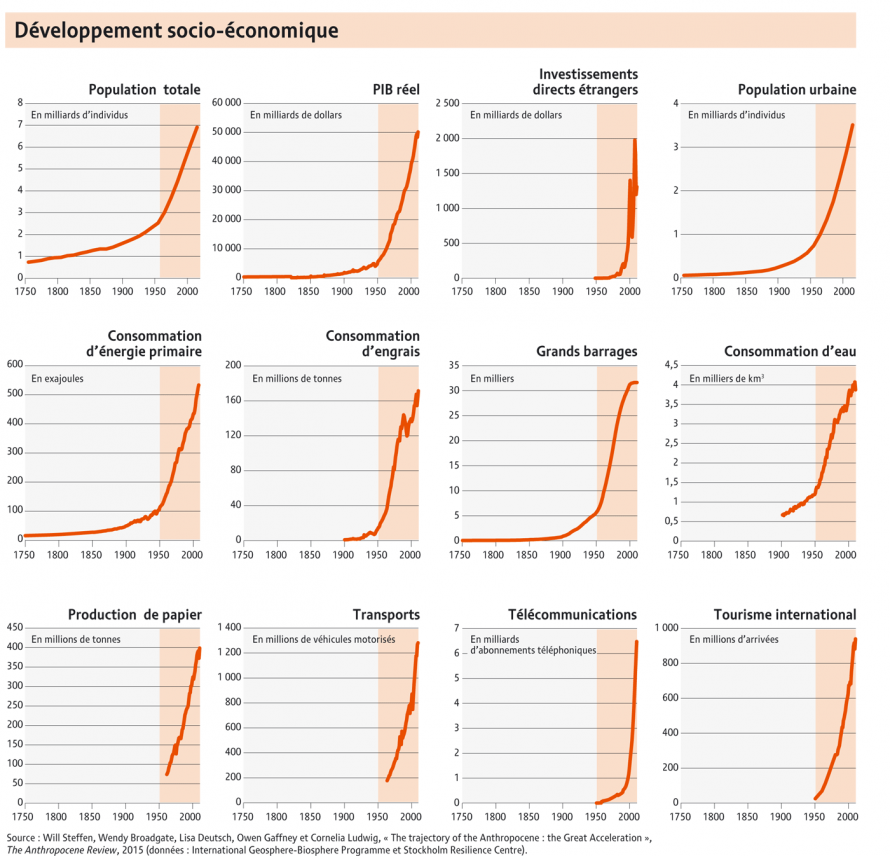
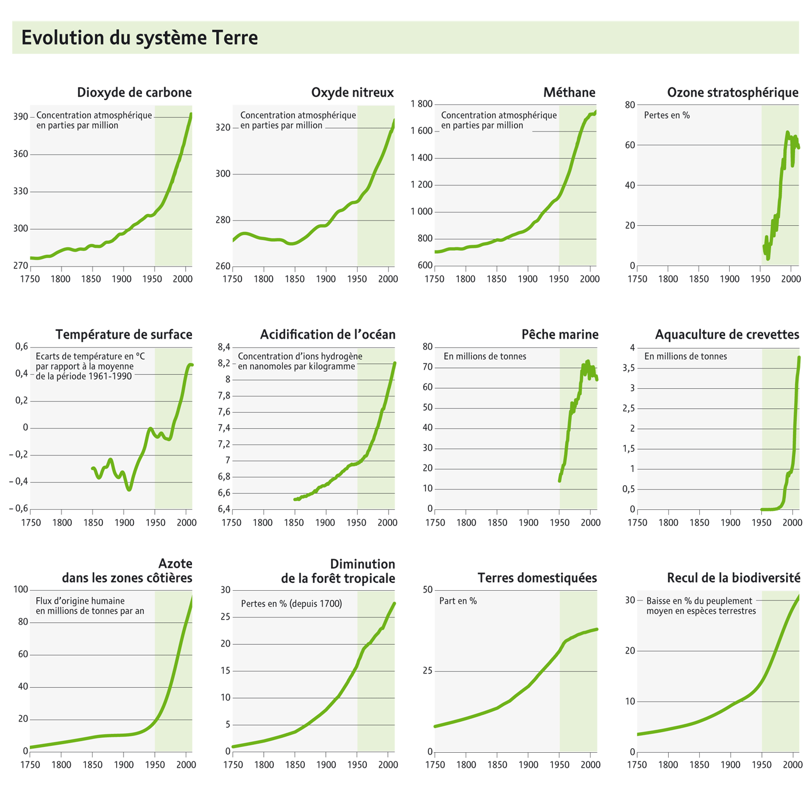
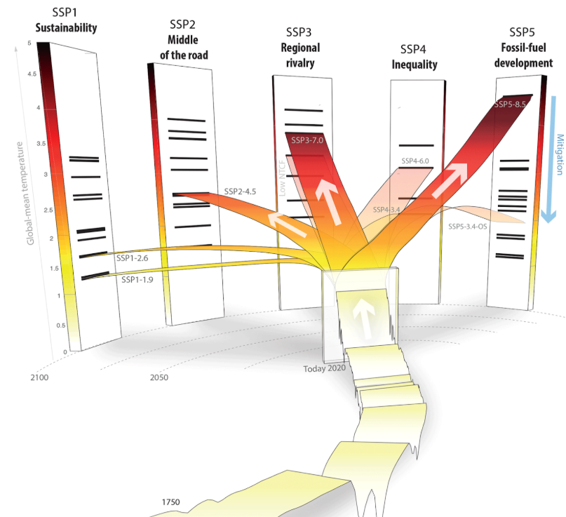
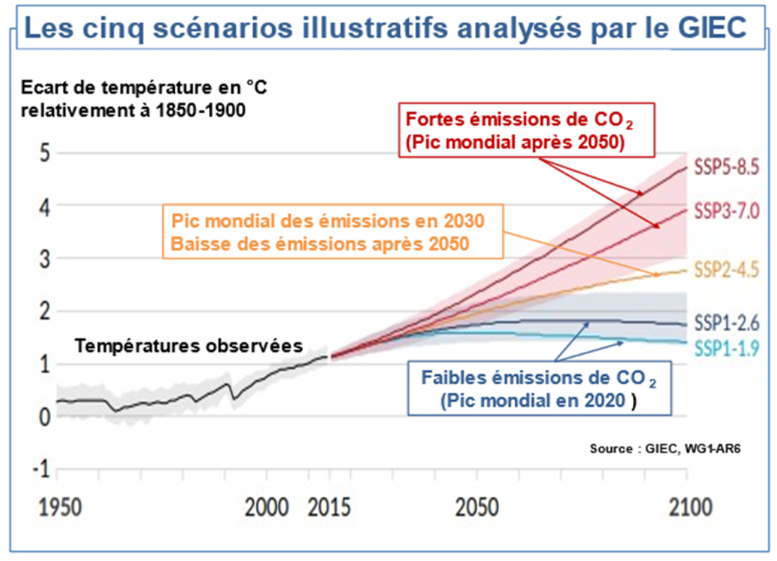
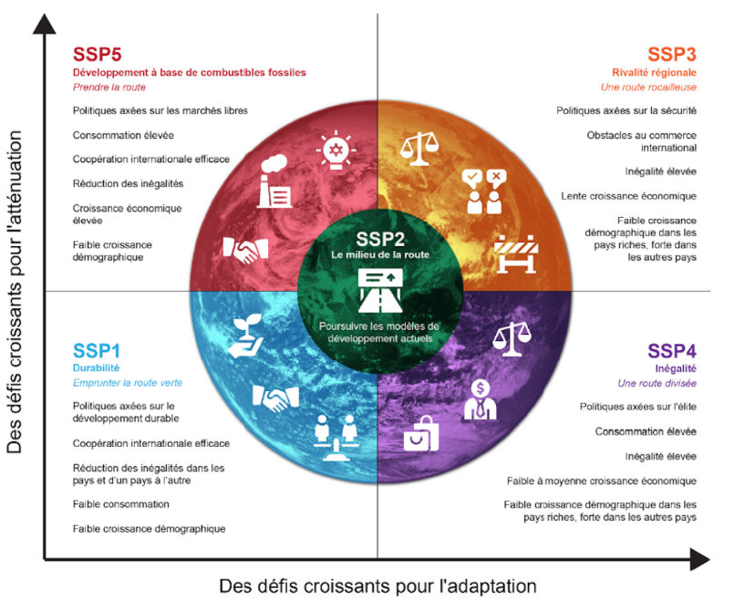
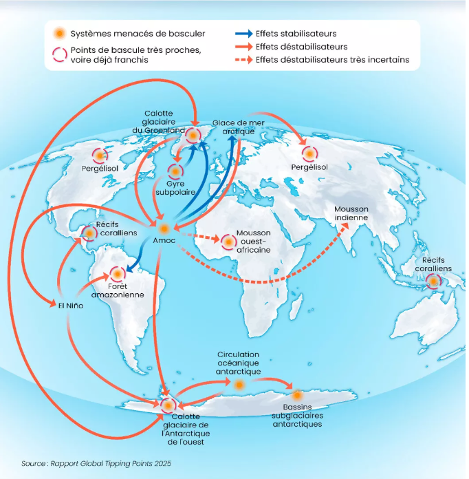

6 L’atlas de l’anthropocène
Cette partie s’ouvre sur L’atlas de l’anthropocène de François Gemenne et Aleksandar Rankovic, une référence francophone pour qui veut analyser les enjeux du concept. J’en propose ici une synthèse.
Il aborde le concept à travers (7) sept grandes thématiques.
6.1 Résumé
L’entrée dans l’Anthropocène est marquée par une “Grande Accélération” des activités humaines et de leurs impacts depuis le milieu du \(XXe\) siècle, entraînant le franchissement de six des dix limites planétaires, notamment celles concernant le climat, la biodiversité, les cycles de l’azote et du phosphore, la couche d’ozone, l’eau douce et les nouvelles entités chimiques.
Note
Une septième limite a été franchie le 24 septembre 2025 : l’acidification des océans.
Les crises sont systémiques et interconnectées, le changement climatique exacerbe l’érosion de la biodiversité, tandis que les pollutions chimiques et plastiques créent des dommages irréparables aux écosystèmes et à la santé humaine. Face à ces bouleversements, le défi consiste à “apprendre à gouverner l’irréversible”. Le succès du Protocole de Montréal pour la protection de la couche d’ozone offre un précédent de gouvernance mondiale efficace, mais la complexité de la crise climatique, les intérêts économiques liés aux énergies fossiles et les inégalités Nord-Sud constituent des blocages structurels majeurs.
Les diagnostics scientifiques, notamment ceux du Groupe d’experts intergouvernemental sur l’évolution du climat (GIEC) et de la Plateforme intergouvernementale scientifique et politique sur la biodiversité et les services écosystémiques (IPBES), sont sans équivoque et pointent vers des scénarios de réchauffement climatique sévère (+2,5 \(°C\) à + 2,9 \(°C\) selon les politiques actuelles), une sixième extinction de masse et des risques systémiques croissants (migrations, insécurité sanitaire et alimentaire, conflits). La transition vers un modèle de développement soutenable reste entravée par l’inertie des systèmes financiers, la persistance des subventions aux industries fossiles et les stratégies de déni ou de retardement. La conclusion de l’atlas est un appel à une action collective radicale, combinant la réflexion et l’expérimentation pour naviguer dans cette nouvelle réalité planétaire.
6.2 Introduction à l’anthropocène
L’Anthropocène désigne une nouvelle époque géologique caractérisée par l’influence déterminante des activités humaines sur le système Terre. Ce concept, bien que non encore formellement validé par l’Union internationale des sciences géologiques (rejet de la proposition en mars 2024), s’est imposé comme un cadre d’analyse essentiel pour comprendre les bouleversements actuels.
6.2.1 Contexte historique et limites planétaires
Prise de conscience initiale : le rapport The Limits to Growth (1972) du Club de Rome fut l’un des premiers à alerter sur l’impossibilité d’une croissance infinie dans un monde aux ressources finies.
Les neuf limites planétaires : théorisées en 2009 par une équipe menée par Johan Rockström, elles définissent les seuils à ne pas franchir pour ne pas compromettre les équilibres fondamentaux de la planète.
Franchissement des seuils : actuellement, sept de ces limites sont considérées comme franchies, affectant :
- le climat.
- la biodiversité.
- les cycles de l’azote et du phosphore.
- l’usage des sols.
- l’eau douce.
- les “entités nouvelles” (particules radioactives, nanoparticules, molécules de synthèse).
- l’acidification des océans
L’image ci-dessous tirée d’une publication du site de l’agenda 2030 en France donne plus de détails.

6.2.2 Apprendre à gouverner l’irréversible
L’Anthropocène contraint à repenser les cadres de gouvernance. Il ne s’agit plus de gérer des ressources mais de piloter un système devenu instable.
L’histoire de la planète (des milliards d’années) et celle de l’humanité (quelques millions d’années) sont désormais indissociables. Il faut donc concevoir une nouvelle politique où la Terre n’est plus un simple objet mais un sujet, avec ses propres dynamiques et limites. L’enjeu est d’apprendre à “gouverner l’irréversible”, car de nombreux changements sont déjà enclenchés et ne pourront être inversés.
6.3 La Grande accélération et la définition de l’époque
L’impact humain a connu une intensification spectaculaire depuis 1950, une période qualifiée de “Grande Accélération”.
6.3.1 Indicateurs de la grande accélération
En 2015, l’International Geosphere-Biosphere Programme (IGBP) a publié 24 indicateurs illustrant cette accélération. Ils montrent une croissance exponentielle de l’activité humaine et de ses impacts sur la planète depuis le milieu du \(XXe\) siècle. Ces indicateurs se divisent en deux catégories : les indicateurs socio-économiques comme la population mondiale, le Produit Intérieur Brut (PIB) et l’utilisation de l’énergie, et les indicateurs du système Terre tels que la concentration de CO2, le réchauffement et l’acidification des océans, et la perte de biodiversité.


“Il est difficile de surestimer l’ampleur de ce changement. L’Humanité est devenue une force géophysique à l’échelle planétaire.” - Will Steffen (1947-2023)
6.3.2 Le débat sur l’année zéro
La définition d’un point de départ formel pour l’Anthropocène est débattue, avec plusieurs marqueurs potentiels :
Extinction de la mégafaune (50 000 à 10 000 av. J.-C.) : premier impact global d’Homo sapiens.
Débuts de l’agriculture (11 000 av. J.-C.) : transformation des paysages et des cycles biogéochimiques.
Rencontre ancien/nouveau mondes (1492-1800) : l’effondrement démographique américain a entraîné une reforestation visible dans les carottes glaciaires (baisse du \(CO_2\) en 1610, ou “pic Orbis”).
Révolution industrielle (dès 1760) : utilisation massive du charbon.
Explosions nucléaires (dès 1945) : Dépôt de radionucléides sur toute la planète, coïncidant avec le début de la Grande Accélération. Ce marqueur est souvent privilégié.
6.4 Le cas d’école de l’ozone : un succès de la gouvernance mondiale
La gestion de la destruction de la couche d’ozone est un exemple rare mais puissant de coopération internationale réussie face à une menace environnementale globale.
La menace : les chlorofluorocarbures (CFC), utilisés massivement dès les années 1950 (réfrigérateurs, aérosols), se décomposent dans la stratosphère et détruisent les molécules d’ozone, qui protègent la Terre des rayons ultraviolets. La découverte du trou dans la couche d’ozone au-dessus de l’Antarctique en 1985 a déclenché l’alarme mondiale.
La réponse politique :
- convention de Vienne (1985) : appelle à la coopération pour enrayer la destruction.
- protocole de Montréal (1987) : traité contraignant qui organise la réduction puis l’interdiction progressive des CFC. Il a atteint la ratification universelle en 2009 (196 États).
Les résultats : la consommation de substances appauvrissant la couche d’ozone a chuté drastiquement. Les scientifiques estiment que le trou sera complètement résorbé vers 2050.
Facteurs de succès :
- alerte scientifique claire et crédible.
- impacts sanitaires directs et compris (cancers de la peau).
- disponibilité de substituts industriels.
- un cadre politique pionnier (responsabilités différenciées, flexibilité).
- coopération politique malgré le contexte de Guerre froide.
National Géographie propose un bel article sur le sujet. cliquez
6.5 La crise climatique : moteurs, impacts et scénarios
Le réchauffement climatique est l’une des manifestations les plus critiques de l’anthropocène, avec des conséquences vastes et profondes.
6.5.1 Moteurs et état des lieux
En 60 ans (1960-2023), les émissions de gaz à effet de serre (GES) ont presque quadruplé. En 2023, elles atteignaient 53 gigatonnes.
La concentration de \(CO_2\) a dépassé 420 \(ppm\), un niveau jamais atteint depuis au moins 800 000 ans. Elle était d’environ 280 \(ppm\) avant l’ère industrielle.
Les trois quarts des émissions cumulées de \(CO_2\) depuis 1750 proviennent des pays du G7. Aujourd’hui, l’Asie représente \(52 \%\) des émissions mondiales, dont \(31 \%\) pour la Chine seule.
La température moyenne a déjà augmenté de \(+1,2 °C\) par rapport à la période 1850-1900. L’année 2023 a été la plus chaude jamais enregistrée.
6.5.2 Scénarios du GIEC pour 2100
Le Groupe d’experts intergouvernemental sur l’évolution du climat (GIEC) a élaboré plusieurs scénarios (SSP) pour l’avenir du climat.

En rappel, depuis sa création en 1988, le GIEC a mené six cycles d’évaluation, qui ont abouti aux rapports suivants :
- Premier rapport d’évaluation (FAR pour First Assessment Report) en 1990
- Deuxième rapport d’évaluation (SAR pour Second Assessment Report) en 1995
- Troisième rapport d’évaluation (TAR pour Third Assessment Report) en 2001
- Quatrième rapport d’évaluation (AR4) en 2007
- Cinquième rapport d’évaluation (AR5) en 2014
- Sixième rapport d’évaluation (AR6) en 2023

| Scénario | Description | Projection de T° moyenne en 2100 (vs 1850-1900) |
|---|---|---|
| SSP1-1.9 | Très optimiste (développement durable) | +1,4 °C (intervalle de 1,0 à 1,8 °C) |
| SSP2-4.5 | Intermédiaire (poursuite des tendances actuelles) | +2,7 °C (intervalle de 2,2 à 3,5 °C) |
| SSP3-7.0 | Pessimiste (fortes rivalités et fragmentation) | +3,6 °C (intervalle de 3,3 à 5,7 °C) |
| SSP5-8.5 | Très pessimiste (développement basé sur les fossiles) | +4,4 °C (intervalle de 4,3 à 6,5 °C) |

6.5.3 Impacts majeurs
Fonte des glaces - perte de 250 milliards de tonnes de glace par an depuis 2009. La fonte de l’Antarctique, qui contient 90 % des réserves d’eau douce, pourrait à elle seule élever le niveau des mers de 57 mètres.
Élévation du niveau des mers - causée pour 2/3 par la fonte des glaces et 1/3 par la dilatation thermique de l’eau. Le rythme a doublé ces 30 dernières années et menace directement 410 millions d’habitants en zones côtières.
Acidification des océans - les océans absorbent un quart des émissions de \(CO_2\), ce qui diminue leur \(pH\). Le \(pH\) est passé de 8,2 à 8,1, menaçant la vie marine, notamment les organismes à coquille ou squelette calcaire.
Santé humaine - le changement climatique aggrave les vagues de chaleur, la malnutrition, et étend l’aire de répartition de maladies vectorielles comme la dengue (moustique-tigre).
Migrations et conflits - la Banque mondiale estime que jusqu’à 216 millions de personnes pourraient devenir des migrants climatiques d’ici 2050. Le changement climatique est un “multiplicateur de menaces” pour les conflits existants (ex : lac Tchad).
Seuils de rupture (Tipping Points) : Au-delà de +2 °C, des points de bascule pourraient être franchis, entraînant des changements brutaux et irréversibles, comme l’effondrement de la calotte glaciaire du Groenland, le dégel du permafrost ou l’affaiblissement de la circulation océanique (AMOC).

6.6 L’Effondrement de la biodiversité
L’humanité est le principal moteur de la sixième extinction de masse, une crise aussi grave que le changement climatique et qui lui est étroitement liée. “Cette fois, l’astéroïde, ce sont les humains.” - Elizabeth Kolbert, The Sixth Extinction
6.6.1 Pressions et causes
Les cinq pressions majeures sur la biodiversité sont :
Destruction des habitats : l’agriculture est le principal facteur. \(75 \%\) des surfaces continentales et \(40 \%\) des environnements marins sont sévèrement altérés. La déforestation tropicale se poursuit à un rythme effréné (l’équivalent de 18 terrains de football par minute).
Surexploitation des espèces : la pêche industrielle a conduit à ce que \(90 \%\) des stocks de poissons soient exploités au maximum ou surexploités.
Changement climatique : modifie les habitats et force les espèces à migrer ou à s’adapter, souvent sans succès.
Pollutions : les pesticides, les plastiques et autres polluants affectent tous les écosystèmes.
Espèces exotiques envahissantes : elles sont une cause majeure de déclin, notamment dans les îles.
6.6.2 État de la biosphère
Déclin des populations : l’Indice Planète Vivante (IPV) du WWF montre un déclin moyen de \(69 \%\) des populations de vertébrés entre 1970 et 2020. Le déclin est particulièrement dramatique en Amérique latine (\(-95 \%\)) et en eau douce (\(-85 \%\)).
Menaces sur les pollinisateurs : les populations d’abeilles sauvages et d’insectes sont en déclin, menaçant 35 % de la production agricole mondiale.
Pandémies : l’intensification des contacts entre humains, faune sauvage et bétail, due à la déforestation et à l’urbanisation, augmente le risque de zoonoses (maladies transmises de l’animal à l’homme), qui représentent 75 % des maladies émergentes.
6.7 Pollutions globalisées
L’Anthropocène est aussi l’ère des pollutions diffuses et persistantes, qui créent des “dégâts irréparables”.
Déchets : deux tiers des déchets mondiaux ne sont pas traités et finissent dans des décharges à ciel ouvert. La production devrait doubler d’ici 2050, notamment en Afrique subsaharienne et en Asie du Sud.
Plastiques : la production mondiale a plus que doublé en 20 ans pour atteindre 435 millions de tonnes en 2020. Seuls 9 % sont recyclés. Les microplastiques envahissent tous les écosystèmes et organismes, y compris humains.
Déchets nucléaires : l’héritage des essais nucléaires et de l’énergie civile constitue une pollution à très long terme. La France compte 1,85 million de m³ de déchets radioactifs.
Pollution de l’air : qualifiée d’“assassin invisible”, elle est responsable de \(6,7\) à \(7\) millions de décès prématurés par an dans le monde.
Perturbateurs endocriniens : présents dans de nombreux produits de consommation, ils altèrent le système hormonal et sont liés à des cancers, troubles de la reproduction et du développement.
Sols empoisonnés : l’agriculture intensive dépend massivement des pesticides et des engrais de synthèse, qui contaminent les sols, l’eau et nuisent à la biodiversité.
6.8 Démographie, consommation et inégalités
La pression sur la planète est moins une question de nombre d’habitants que de modes de vie et d’inégalités extrêmes de consommation.
Population mondiale : a atteint 8 milliards en 2023 et devrait culminer à 10,4 milliards dans les années 2080 avant de décliner.
Inégalités abyssales :
- Le \(1 %\) le plus riche de l’humanité émettrait autant de GES que les deux tiers les plus pauvres.
- L’empreinte écologique moyenne d’un habitant des pays riches est plusieurs centaines de fois supérieure à celle d’un habitant d’Asie ou d’Afrique.
Consommation de ressources :
- Jour du dépassement : en 2024, il faudrait 1,75 planète pour subvenir aux besoins de l’humanité. Si tout le monde vivait comme au Qatar, il en faudrait 6,7.
- Masse anthropique : la masse de tous les objets produits par les humains (béton, plastiques, etc.) dépasse désormais la biomasse totale de la planète.
- Villes, épicentres de l’Anthropocène : en 2024, \(57 \%\) de la population mondiale est urbaine. Les villes concentrent la consommation, la production de déchets et les émissions.
6.9 Les politiques de l’Anthropocène : blocages et levier d’action
La gouvernance de l’Anthropocène se heurte à des obstacles politiques, économiques et idéologiques majeurs.
6.9.1 Les blocages structurels
L’éléphant fossile dans la pièce : l’industrie des énergies fossiles reste extrêmement puissante. 122 entreprises sont responsables de \(72 \%\) des émissions industrielles de GES depuis la Révolution industrielle. Elles bénéficient encore de subventions massives (7 000 milliards de dollars en 2022 selon le FMI).
L’empreinte carbone de la finance : malgré les engagements, les plus grandes banques mondiales continuent de financer massivement les combustibles fossiles (705 milliards de dollars en 2023 pour les 60 plus grandes banques).
Déni climatique et inertie : le climatoscepticisme, bien que minoritaire, contribue à retarder l’action. Des stratégies de “doute” et de lobbying freinent les politiques ambitieuses.
Promesses non tenues : les engagements pris dans le cadre de l’Accord de Paris de 2015 sont largement insuffisants. La trajectoire actuelle mène à un réchauffement de \(+2,5\) \(°C\) à \(+2,9\) \(°C\) d’ici 2100.
6.9.2 Les leviers d’action
Le rôle de la science : des organismes comme le GIEC et l’IPBES fournissent une base de connaissances solide pour guider les politiques.
Géoingénierie : des technologies de manipulation du climat sont envisagées (capture de carbone, gestion du rayonnement solaire), mais elles sont coûteuses, risquées et controversées.
Écologie politique et mouvements citoyens : la montée des partis verts et la mobilisation de la société civile (ONG, mouvements de jeunes comme Fridays for Future, actions de désobéissance civile) exercent une pression croissante sur les gouvernements et les entreprises.
Litiges climatiques : le nombre de procès intentés contre des États ou des entreprises pour leur inaction climatique est en forte augmentation.
6.10 Conclusion
L’Atlas de l’Anthropocène se conclut non pas sur des solutions simples, mais sur la nécessité de changer radicalement de paradigme.
Pas de solutions faciles : il faut se méfier des réponses simplistes, qu’elles soient issues du solutionnisme technologique, de la “croissance verte” qui ne remet pas en cause le modèle productiviste, ou du survivalisme.
Un chantier collectif : la sortie de la crise ne peut être que collective. Elle implique de repenser les notions de progrès et de développement, de réduire les inégalités et de mettre en place de nouvelles formes d’organisation sociale et économique.
Expérimenter en grand et en vrai : face à l’incertitude, il est nécessaire d’expérimenter de nouvelles manières de vivre, de produire et de gouverner, en tirant les leçons des succès comme des échecs.
Mente et Malleo (“Par la pensée et le marteau”) : la conclusion appelle à conjuguer la rigueur de l’analyse scientifique et la force de l’action concrète pour construire un monde habitable dans les limites de la planète.